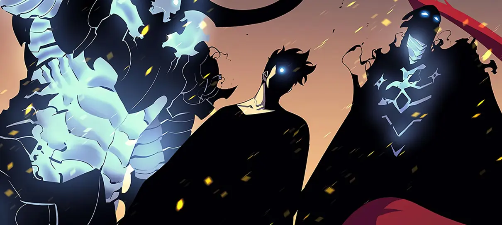
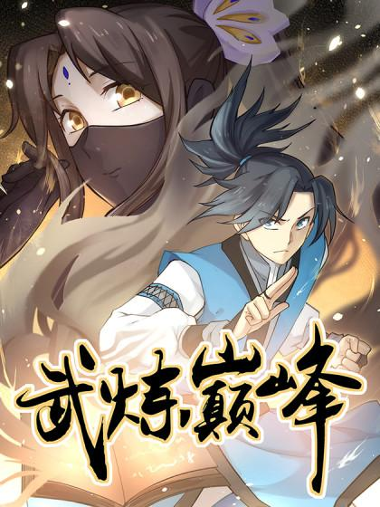

O que é mangá?
Mangá é o nome dado às histórias em quadrinhos de origem japonesa. A palavra surgiu da junção de dois vocábulos: “man” (involuntário) e “gá” (desenho, imagem). Ou seja, mangá significa literalmente “desenhos involuntários”. Além disso o mangá já é um velho conhecido dos brasileiros, se popularizando de vez nos anos 2000 com publicações de títulos como Dragon Ball e Cavaleiros do Zodíaco, ambos pela editora Conrad; Samurai X e Sakura Card Captors, pela JBC.
E já ouviu falar de Manhwa?
Manhwa, de origem coreana, aposta na internet como um repositório de suas obras e adota a leitura da esquerda para a direita, padrão em HQs americanas e outras publicações ocidentais. Apesar disso, os títulos se apoiaram muito no modelo japonês durante sua concepção e, assim como no mangá, as histórias coreanas costumam abordar os mais variados gêneros, frequentemente indo para os lados da ação ou romance. Outra particularidade das obras coreanas é que são mais comumente adaptadas para o formato de doramas (saiba mais sobre esse tipo de conteúdo aqui) ou filmes live-action, enquanto no Japão é comum ver as histórias mais populares virando anime.

E Manhua?
Os manhua começaram em 1870 como desenhos satíricos publicados em jornais e revistas, na China. Pulando para a década de 1920 , nascem os lianhuanhua, livros de bolso ilustrados, que são considerados os antecessores diretos do manhua moderno. O manhua costuma apresentar traços menos exagerados e caricatos do que estamos acostumados a ver nos mangás, chegando mais próximo do realismo, e geralmente são bastante detalhados. Uma curiosidade é que a orientação de leitura de um manhua pode variar dependendo do local onde a obra for criada: caso tenha sido feita em Hong Kong ou Taiwan, as comics são lidas como mangás, da direita para a esquerda; mas se tiverem sido criadas na China continental, provavelmente terão leitura da esquerda para a direita como os manhwas.
